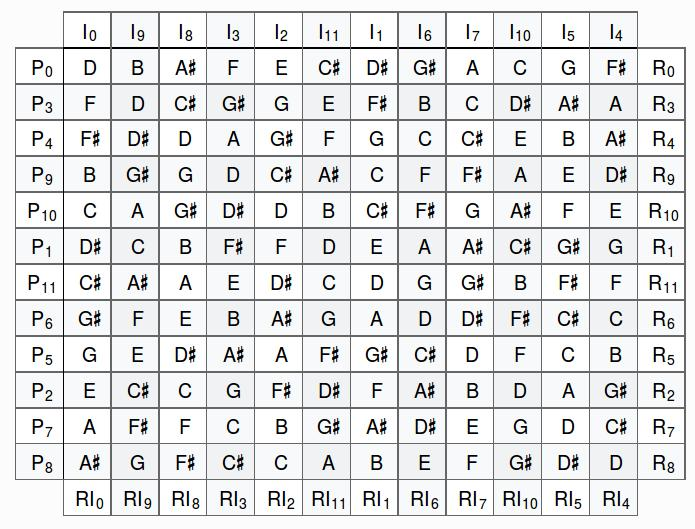
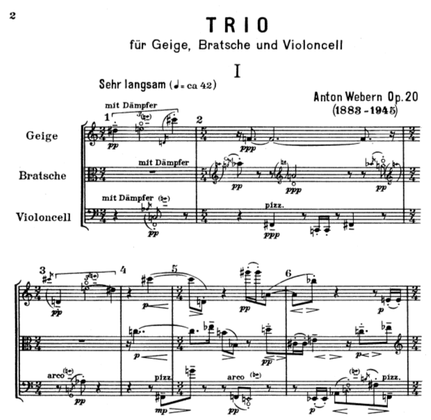
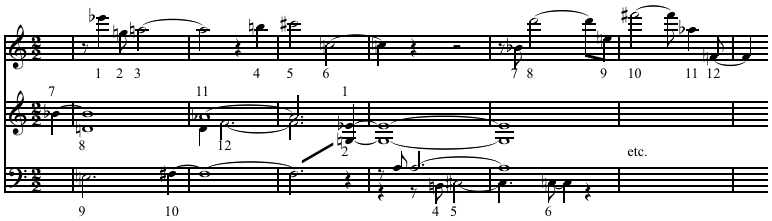

Trabajo de Fin de Grado
Asistente de composición de música dodecafónica
Autor: Leopoldo Pla Sempere / Tutor: Carlos Pérez Sancho
Grado en Ingeniería Informática 2010-2014 / Universidad de Alicante
Estructura de la
presentación
- Introducción
- Motivación
- Objetivos
- Descripción
- Resultados
- Conclusiones
Introducción
El asistente de composición de música dodecafónica es una herramienta que
- ayuda al compositor a obtener ideas, fragmentos, frases o voces completas para la composición de una obra dodecafónica.
- se basa en restricciones delimitadas por el compositor.
Música dodecafónica
- Iniciada por Arnold Schoenberg entre 1921 y 1923
- Tipo de serialismo (no predominan unas notas sobre otras)
- Se basa una serie con las doce notas de la escala (con cierto orden)
- Se obtiene una matriz de series derivadas de la serie original
Matriz dodecafónica
Ejemplo de obra dodecafónica

Diagrama del flujo de trabajo

Demostración del funcionamiento
Resultados
Ejemplo de obra formal
Obra compuesta utilizando el asistente

Conclusiones
- Se obtienen obras muy similares a una compuesta íntegramente por un compositor
- Los objetivos se cumplen, ya que los fragmentos musicales obtenidos son útiles
- El desarrollo se ha llevado de forma incremental
Conclusiones
- Líneas futuras de desarrollo
- Programación de formas barrocas y clásicas (contrapuntos por ampliación, por reducción, cánones...)
- Desarrollo de las series entre voces 
- Mejorar la compatibilidad con QT5